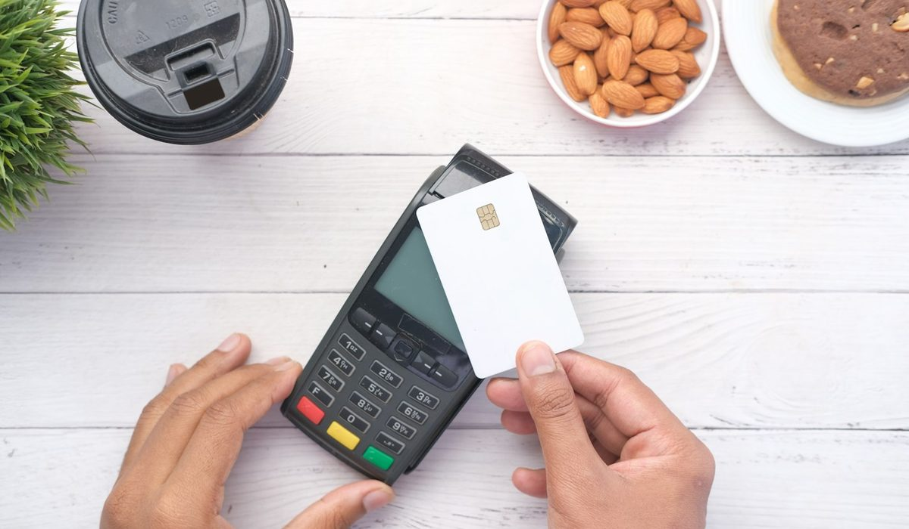

En bref
Aucun âge légal minimum n'existe pour la carte bancaire d'un mineur. C'est la banque qui fixe l'âge d'accès, et l'ouverture exige l'accord des parents, titulaires de l'autorité parentale et chargés de l'administration légale des biens de l'enfant. En pratique, certaines néobanques proposent une carte dès 6 ans, la plupart des offres ados démarrent à 12 ans, avec une carte à autorisation systématique et des plafonds fixés par les parents.
- Ni le Code monétaire et financier ni le Code civil ne fixent d'âge minimum pour détenir une carte
- Un mineur non émancipé ne peut pas ouvrir seul un compte, ses parents agissent comme administrateurs légaux
- Certaines néobanques ouvrent une carte dès 6 ans, la plupart des offres ados dès 12 ans
- Les cartes pour mineurs fonctionnent en autorisation systématique, sans découvert
- Le prix va de la gratuité, souvent quand un parent est client, à quelques euros par mois
Sommaire de ce guide
Ce que dit la loi, et ce qu'elle ne dit pas
La question revient chaque rentrée, et la réponse surprend. Aucun article du Code monétaire et financier ni du Code civil ne fixe un âge à partir duquel un enfant peut détenir une carte bancaire. Les sites officiels, Banque de France et service-public.fr compris, ne donnent pas d'âge minimum.
Ce que le droit encadre, c'est la capacité de l'enfant. Un mineur non émancipé ne peut pas signer seul un contrat bancaire. Ses parents exercent l'autorité parentale et assurent l'administration légale de ses biens, c'est donc à eux d'ouvrir le compte ou d'y consentir. La banque, de son côté, reste libre de fixer l'âge à partir duquel elle accepte un client mineur, et le type de carte qu'elle lui remet.
L'âge d'une carte pour enfant n'est pas une règle de droit. C'est une décision commerciale de la banque, encadrée par l'accord des parents.
Conséquence directe, ce sont les parents qui engagent l'ouverture du compte et qui choisissent, avec la banque, le type de carte et ses plafonds. L'enfant utilise la carte, il ne la négocie pas. Pas d'accord, pas de carte.
Un cas à part existe. Le mineur émancipé, ce qui n'est possible qu'à partir de 16 ans, est traité comme un majeur pour les actes de la vie civile. Il peut ouvrir un compte et demander une carte sans l'accord de ses parents. La situation reste rare.
Les âges pratiqués par le marché
Faute de règle, chaque établissement trace sa frontière. Deux seuils dominent nettement. Certaines néobanques proposent une carte dès 6 ans, rattachée au compte d'un parent déjà client. La plupart des offres ados, en banque en ligne comme en néobanque, démarrent à 12 ans, l'âge de l'entrée au collège.
| Solution | Plafond | Âge d'accès habituel | Découvert | Rôle des parents | Pour quel enfant |
|---|---|---|---|---|---|
| Carte d'une appli familiale de néobanque | Fixé par le parent dans l'application | Dès 6 ans chez certaines néobanques | Non proposé | Ouvre le compte depuis son propre espace | Premier apprentissage de l'argent |
| Offre ado avec carte à autorisation systématique | Plafonds mensuels fixés par le parent | Dès 12 ans pour la plupart des offres | Non proposé | Autorise et accompagne l'ouverture | Collégien et lycéen |
| Carte de retrait seule | Montant de retrait fixé à l'ouverture | Selon la banque | Non proposé | Signe la demande | Ado qui a surtout besoin d'espèces |
| Carte prépayée rechargeable | Montant chargé sur la carte | Selon l'émetteur | Impossible par construction | Recharge la carte | Dépense ponctuelle ou voyage |
| Carte sur compte de mineur en banque de réseau | Fixé avec la banque | Selon la banque, souvent à l'adolescence | Non proposé | Signe et choisit les plafonds | Enfant déjà titulaire d'un livret |
| Carte de mineur émancipé | Fixé avec la banque | À partir de 16 ans, après émancipation | Selon la banque | Accord plus nécessaire | Jeune autonome |
| Carte de majeur | Fixé avec la banque | 18 ans | Selon la banque | Aucun | Jeune adulte |
Âges et pratiques relevés sur les offres du marché en octobre 2026. Aucun âge minimum n'est fixé par les textes.
Notre lecture du tableau est simple. Sous 12 ans, une carte n'a de sens que dans une application où le parent garde la main sur chaque euro. Entre 12 et 17 ans, l'offre ado à autorisation systématique est la formule la plus courante et la plus encadrée. À 18 ans, l'enfant devient un client comme un autre, et selon les offres le compte bascule en compte adulte, parfois en conservant le même RIB.
L'accord des parents, concrètement
L'ouverture passe toujours par le représentant légal. Selon la banque, la signature d'un seul parent suffit ou celle des deux est demandée. Certaines offres exigent que le parent soit lui-même client, d'autres non.
- La pièce d'identité de l'enfant et celle du parent qui signe sont demandées partout.
- Le livret de famille ou un acte de naissance sert à prouver le lien de filiation.
- Une autorisation parentale signée accompagne la demande dans la plupart des offres ados.
- Certaines banques demandent que le parent accompagne physiquement l'enfant au moment de l'ouverture.
Comptez donc un quart d'heure de démarches au minimum, souvent plus quand il faut retrouver un livret de famille. Aucune offre sérieuse n'ouvre une carte de mineur sans ces pièces.
Les garde-fous d'une carte pour mineur
Les cartes destinées aux enfants partagent une même mécanique. Elles fonctionnent en autorisation systématique, chaque paiement est vérifié sur le solde disponible et refusé s'il ne passe pas. Pas de découvert, donc pas d'agios ni de commission d'intervention.
- Les parents fixent les plafonds mensuels de paiement et de retrait, souvent depuis leur téléphone.
- Une notification arrive à chaque opération, côté parent comme côté enfant.
- La carte peut être bloquée temporairement en cas de perte ou de dépense imprévue.
- Le solde et l'historique se consultent en temps réel.

Sur le prix, l'éventail va de la gratuité, fréquente quand un parent est déjà client de la banque, à quelques euros par mois pour les applications familiales qui facturent un abonnement. Avant de choisir, comparez aussi les frais de retrait et de paiement à l'étranger, souvent oubliés au moment du premier voyage scolaire.
Quel âge, quelle carte, selon votre enfant
Votre enfant a entre 6 et 11 ans
Une carte n'est pas indispensable. Si vous voulez commencer, préférez une application familiale où chaque dépense remonte en temps réel et où vous rechargez de petites sommes. L'argent de poche en espèces reste un très bon outil à cet âge.
Votre enfant entre au collège
C'est l'âge où la plupart des offres ados s'ouvrent, à 12 ans. Une carte à autorisation systématique, avec un plafond hebdomadaire bas et des notifications, apprend à tenir un budget sans risque de découvert.
Votre enfant a entre 15 et 17 ans
Relevez les plafonds et laissez davantage d'autonomie. Un premier job d'été, des sorties, un voyage. Vérifiez à ce moment ce que devient le compte à 18 ans, transfert automatique, changement de tarif ou nouveau RIB.
Votre enfant fête ses 18 ans
Il signe désormais seul. Le compte ado bascule le plus souvent en compte adulte, avec une carte et des frais qui changent. C'est le bon moment pour comparer à nouveau les offres plutôt que de garder la formule par défaut.
Notre verdict
Il n'existe aucun âge légal minimum pour qu'un enfant ait une carte bancaire. La banque fixe son âge d'accès, les parents donnent leur accord au titre de l'autorité parentale et de l'administration légale. Sur le marché, certaines néobanques ouvrent une carte dès 6 ans, la plupart des offres ados dès 12 ans.
Si votre enfant a moins de 12 ans, restez sur une application familiale ou sur l'argent liquide. Si vous êtes dans la situation d'un collégien qui réclame sa carte, choisissez une offre ado à autorisation systématique avec des plafonds que vous réglez vous-même. Pour comparer les offres une par une, notre classement des cartes pour ados détaille les prix et les services.
Questions fréquentes
Existe-t-il un âge légal pour avoir une carte bancaire ?
Non. Ni le Code monétaire et financier ni le Code civil ne fixent d'âge minimum pour détenir une carte bancaire. C'est chaque banque qui décide de l'âge à partir duquel elle accepte un mineur, avec l'accord de ses parents.
À partir de quel âge les banques proposent-elles une carte à un enfant ?
Certaines néobanques proposent une carte dès 6 ans, rattachée au compte d'un parent client. La plupart des offres ados commencent à 12 ans. Ces cartes fonctionnent en autorisation systématique, sans découvert.
Un mineur peut-il ouvrir un compte bancaire sans ses parents ?
Un mineur non émancipé ne peut pas ouvrir seul un compte avec une carte, ses parents exercent l'autorité parentale et l'administration légale de ses biens. Seul le mineur émancipé, à partir de 16 ans, peut le faire sans leur accord.
Quels documents faut-il pour ouvrir une carte bancaire à un ado ?
La banque demande la pièce d'identité de l'enfant et celle du parent, le livret de famille ou un acte de naissance, et le plus souvent une autorisation parentale signée. Certaines offres exigent que le parent soit présent à l'ouverture, d'autres qu'il soit déjà client.
Un enfant peut-il être à découvert avec sa carte ?
Non, les cartes pour mineurs fonctionnent en autorisation systématique. Chaque paiement est vérifié sur le solde disponible et refusé s'il ne passe pas. Les parents fixent en plus des plafonds mensuels de paiement et de retrait.
Que devient le compte d'un ado à 18 ans ?
Selon les offres, il bascule en compte adulte, parfois en conservant le même RIB, avec une nouvelle carte et une nouvelle grille tarifaire. Le jeune majeur signe désormais seul et peut comparer librement les offres du marché.
Notre méthode
Ce comparatif repose sur des données publiques, vérifiables une par une, et sur des critères affichés avant le classement.
- Les tarifs sont relevés dans les plaquettes tarifaires et les pages officielles des établissements, frais de tenue de compte et de carte compris
- Les conditions d'ouverture (revenus, âge, justificatifs, délai) sont vérifiées sur le parcours d'ouverture de chaque offre
- Les plafonds réglementaires (frais d'incident, offre clientèle fragile, droit au compte) sont ceux publiés par la Banque de France et service-public.fr
- Les avis clients sont lus sur les stores d'applications et Trustpilot, en retenant les motifs récurrents plutôt que la note seule
- Chaque critère est noté sur 10 et la grille de notation est identique d'un comparatif à l'autre